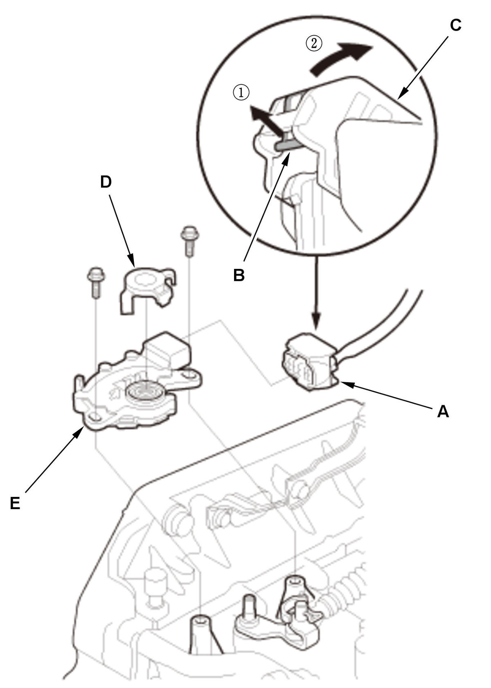

Transmission Range Switch Removal and Installation (L15B7/L15BA/L15BY (CVT)): Removal
- Air Cleaner - Remove
- Intake Air Duct E - Remove
- TCM Harness - Remove
- Transmission Range Switch - RemoveFig 1: Transmission Range Switch Components With Connector Disconnection Sequence (L15B7/L15BA/L15BY - CVT)

Courtesy of HONDA, U.S.A., INC.1. Disconnect the connector (A) by pulling the lock (B) and the lever (C) in the numbered sequence shown. 2. Apply the parking brake.
3. Shift the transmission to N position/mode.
4. Remove the control shaft cover (D).
5. Remove the transmission range switch (E).